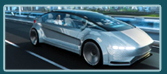

Disruptive technology is one that displaces an established technology and shakes up the industry or a ground-breaking product that creates a completely new industry."
"
Introduction
The key feature of disruptive technology is its ability to offer consumers new and notable benefits. When this type of technology enters the marketplace, it changes the entire industry.
Today, we are experiencing multiple technological revolutions within a single generation, and they are happening faster than ever before. The continuous breakdown of paradigms is causing dramatic alterations in our society. What is most astonishing is the interconnectivity of each disruption. The cycles we experience are more linked — from technologies to business models to social movements, making it very difficult to predict what will come next and what will prevail.
Car manufacturers and consulting firms are calling for a completely autonomous car by 2030, but the driverless revolution has already started. The technological building blocks are available in the form of GPS, radar/LiDAR, infrared and ultrasonic sensors, cameras, inertial systems and more. Automation software has been developed for autonomous vehicle process flows. These solutions include parking assist, intelligent cruise control, lane guidance, blind-spot sensors, emergency breaking, collision avoidance and traffic jam assist.
Self-Driving Cars as a Disruptive Technology
 What is Disruptive Technology?
What is Disruptive Technology?
Disruptive technology is any innovation that dramatically changes the way consumers, businesses and industries operate. When they're first developed, disruptive technologies often create a new market. They establish their own value network and are often seen as risky outliers when they're introduced..
Overview of Self-Driving Cars
The question of when self-driving cars will gain mass acceptance is not a matter of if, but when. Google (GOOG), DARPA, auto-makers, and universities around the world are all hard at work making this a reality. The prospect of widespread use of driverless cars brings with it many benefits: fewer traffic accidents and the economic toll caused by property damage, injury or death that results. Energy costs will also be saved as these autonomous vehicles maximize driving efficiency and reduce traffic congestion. The net economic benefit has the potential to be enormous.
Did You Know?
The first autonomous car concept was introduced in the Futurama section at New York World’s Fair in 1939.
General Motors made the exhibit as a segment of its vision of the USA future in 20 years.
How do self-driving cars “see”?
LIDAR and integrated photonics technologies that help self-driving cars navigate obstacles.
The Pros & Cons of Self-Driving Cars
Ways self-driving cars could transform our lives in the near future.